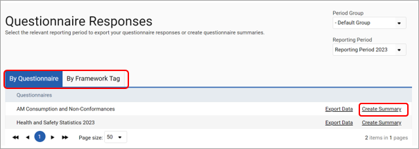
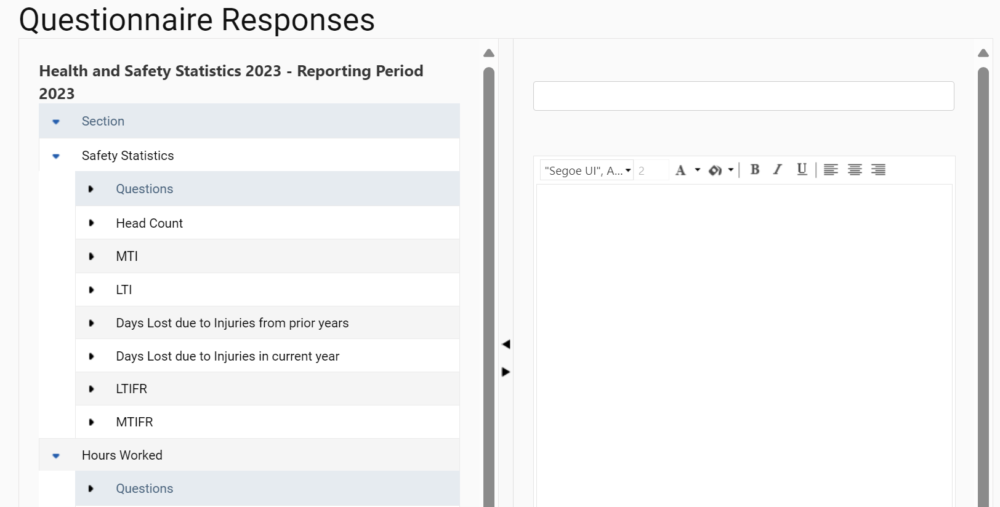
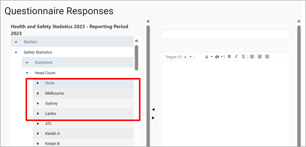

Step 1
You can see all responses and attach summary notes to questionnaires by clicking on ‘Reporting > Questionnaire Responses’.
You can select the questionnaire responses by questionnaire or by framework tag. You can create the latter from ‘Frameworks > Settings >Tagging > Tags’
Summaries that have been created can be edited and deleted for each questionnaire. You can click on ‘Create Summary’ to see responses and add a new summary.

Step 2
The left-hand panel shows responses for all nodes for each question. Blank responses are questions that have not been answered. In the right-hand panel, you can add summary text or notes and save these summaries as you review responses.

Step 3
In the left-hand column, numerical responses are summed for each node and for the entire question. When a question is expanded using the small arrow on the left, a blue box circles all responses that relate to that question.
